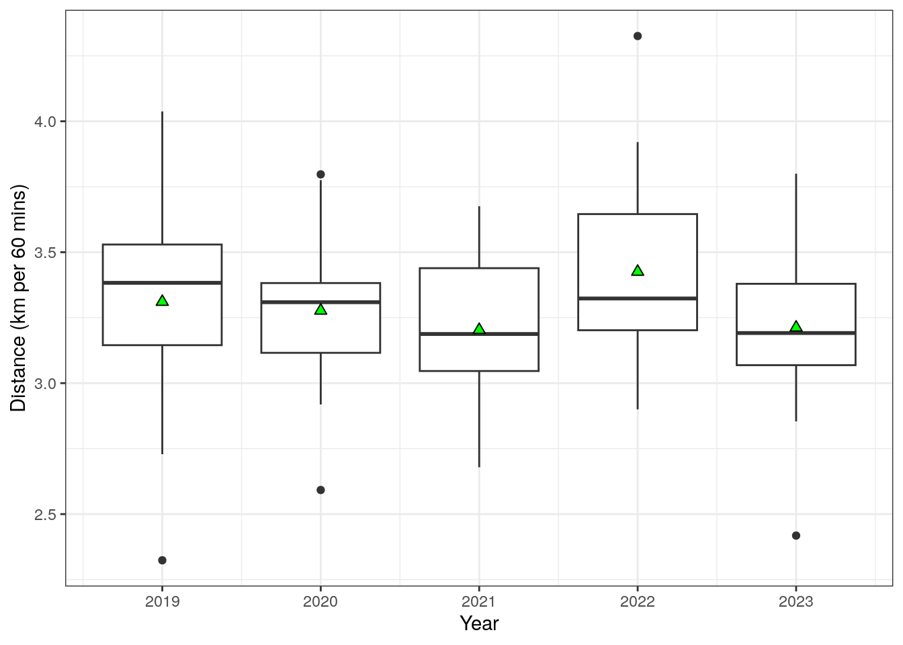
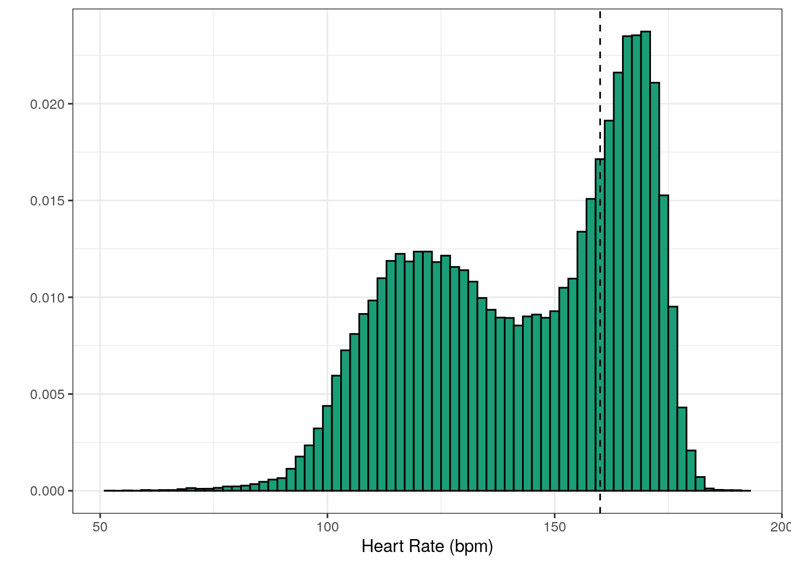
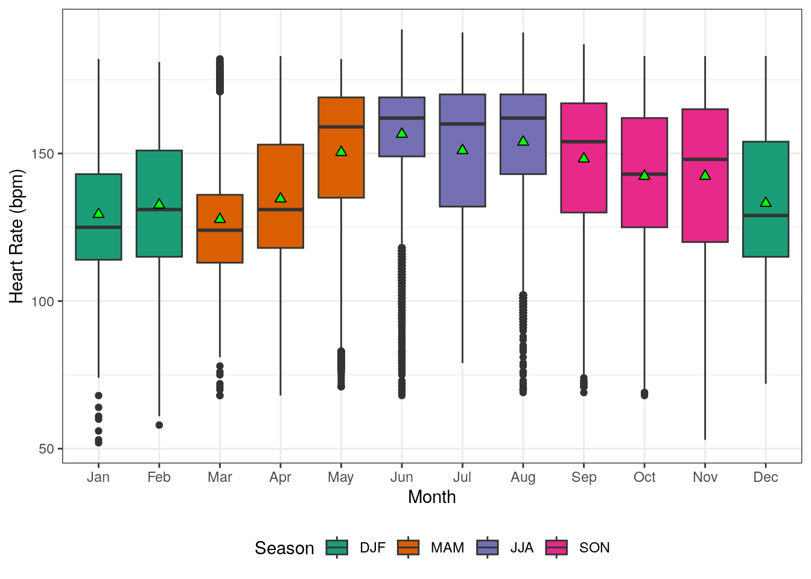
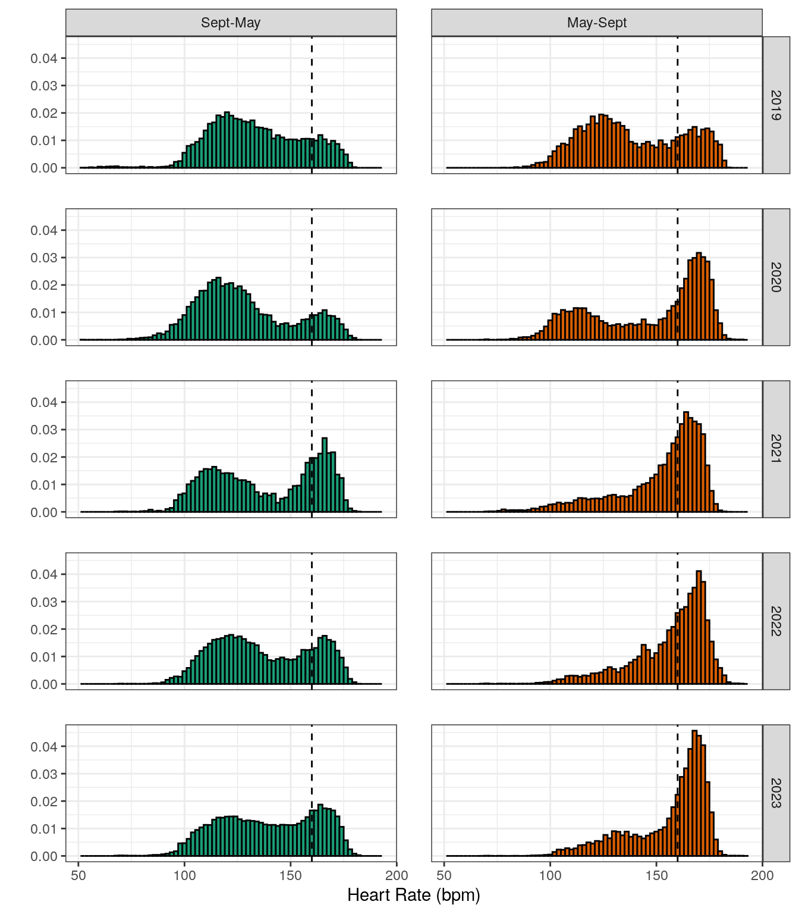
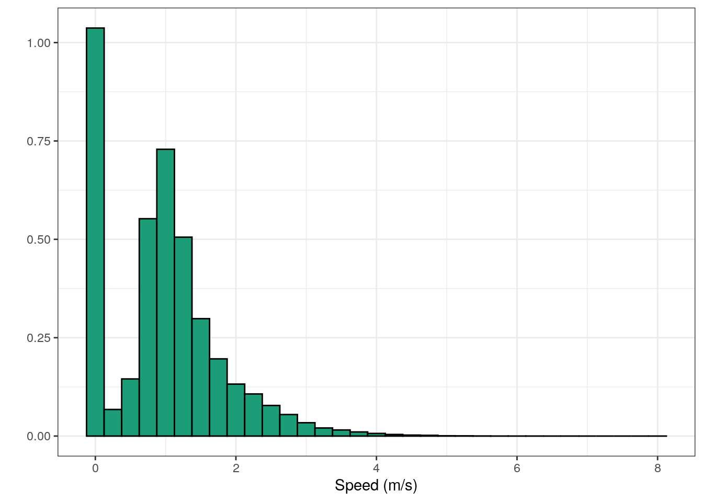

5-a-side Football: GPS Analysis
5-a-side Football: GPS Analysis
I am a mediocre athlete and not a particularly gifted football player. What I lack in skill, I try to compensate with defensive work (as you will come to learn as you read) and effort. While I am far from an elite athlete, I am a self-confessed nerd who loves data. In early 2019 I bought a Garmin GPS watch and out of my own curiosity started using it to record running activities during my weekly 5-a-side games. This is an analysis of 5 years of GPS watch data from 144 games of 5-a-side football played on the same pitch.
These 5 years have produced some interesting results, highlighted the accuracy limitations of these sensors and captured a change in my style of play. As well as GPS data, the watch also collected heart rate and instantaneous speed/pace data which were analysed as well. This gives an overview of the main things I found while analysing the data.
Data Overview
Watch
The watch is a Garmin Vivoactive3, shown below. This is a smartwatch with built-in GPS and it records the distance, pace and location for outdoor activities, like running and cycling. It records a measurement of these quantities about every 2 seconds (by default, more on this later), with over 175,000 samples in total across the entire collection of 144 games.

Source: (https://www.garmin.com/en-GB/p/571520)
Data was accessed from the GarminConnect environment using this very useful python library.
Pitch Dimensions, Orientation and Accuracy
The pitch is a 5-a-side cage, with rough dimensions of 27m (length) x 18m (width). The games are informal, “pick-up style” games, where one member of the group divides the group of 10 into two teams of 5 which are (hopefully) fairly balanced in terms of ability.
To analyse the GPS data I needed to establish the coordinates of the pitch as a reference. I took the coordinates of the four corners of the pitch in latitude and longitude. These were then converted into the Irish Tranverse Mercator (ITM) coordinate system, which has units in metres, allowing for easier arithmetic with location data. For further analysis of the data, the pitch was then subdivided into a grid of 54 squares of roughly 3m x 3m in size, which is shown below. The centre of the pitch is shown by a red dot, which will be used later.

One thing that I realised was the importance of noting the direction of play in the title of the activity, as I could be playing either direction depending on the week. If I forgot to note down the direction, I had to go back to the output in the Garmin Connect webpage and try and work out the most likely direction of play. As it turned out, I most frequently played in the “right-to-left” direction, about twice as often as “left-to-right”, so I chose that as the primary direction to be used. Instead of considering the two directions in isolation, I decided to dust off my knowledge of Euclidean transformations and write some code to reflect data points through the centre point of the pitch (red dot in figure above). This turned every “left-to-right” game into a “right-to-left” game so that all games could be analysed together, making a total dataset of over 175,000 data points. An example of reflecting 11 data points is shown in figure below.

As I quickly learned, GPS measurements from the watch were far from precise. This is a well known phenomenon in academic literature (1, 2, 3). The GPS data for a single match on the 16th August 2023 are shown in the figure below. As you can see, many values lie outside the boundary of the pitch. By considering a large enough sample of data, the hope is that the signal will emerge from the noisy nature of each individual match and some useful results can be gotten from the data.

Results
Total Distance
The average total distance (coverted into km per 60mins to account for varying game length) is shown below as boxplots, split by year. The average distance covered has not varied significantly over the 5 years, generally in the region of 3.0-3.5 km per 60 mins. I have tried to consciously cover more ground during the games, but this appears to be the ballpark figure that I land on based on my athletic profile and the pitch dimensions.

Field Positions
The frequency with which I occupied a given zone on the pitch is shown in the plot below. My defensive nature is evident in the plot with my tendency to occupy central defensive zones, trying to make best of use of the skills that I have that can positively impact on my team’s chance of winning. Unsurprisingly, I am seldom found in the attacking half of the pitch. Although due to the small nature of the playing area, I do have non-zero frequencies for all zones on the pitch.

Heart Rate
The distribution of heart rate data for the entire dataset is shown in the graph below. As well as being an enjoyable pastime, I also try to use these football games as a Zone 4/5 cardio session. There are a variety of ways to potentially define different heart rate zones. Garmin estimates the lower bound of Z4 to be 154bpm. Meanwhile omnicalculator.com has a variety of methods to estimate heart rate zones. These uses max heart rate and resting heart rate as inputs to the formula. Max heart rate can either be taken from the data (giving a Z4 HR of 157bpm), or estimated using a formula such as “Oakland nonlinear formula” (giving a Z4 HR of 160bpm). I have taken the highest of these values (160bpm) and plotted that as the dashed vertical line in the histogram in the histogram plot.

I have tried to optimise time spent in those high heart rate zones, as this is generally viewed as being beneficial for cardiovascular health. But there is a clear visual anomaly that can’t be overlooked in the data. The data has a slightly strange bimodal distribution (two peaks in the histogram plot). A further peculiarity in the data was also found when boxplots were created for each month, shown below. Both the means(green trianglees)/medians(horizontal lines) and the inter-quartile ranges tend to be higher during the middle of the year (May-September) compared to the rest of the year.

To study this a little bit further. I plotted histograms where the data was split by both year and whether the month lies inside or outside the May-September month window, shown below. Data in the summertime period (orange) tends to have a much higher frequency of high heart rate values compared to the remainder of the year. Data for summer in 2019 is the one outlier, but I think this may be attributed to not wearing the watch tightly enough during the game in the first year of using the watch.

The bimodal distribution is generally most apparent during the non-summer months (green, left column in panel of histograms). I do not have any expertise in wrist-based heart rate sensors, but I have seen some experts in the area talk about the limitations of this methodology. One (very speculative) theory is that I have poor circulation to my hands (easily get numb hands during cold weather) and maybe this leads to less accurate measurements of my heart rate. One way to investigate this further, might be to get a chest-strap heart rate monitor and see if that improved the quality of the heart rate data.
Broadly speaking, I do generally meet the objective of getting my heart rate elevated during the games, and it does appear to be doing a little bit better at accumulating time above my Z4 heart-rate threshold. Although my own confidence in the validity of these numbers is very low.
Running Speed
Another quantity measured by the watch is pace/speed. The histogram of speed (in m/s) is shown in the figure below. The speeds observed are far from being anything impressive, but I’ll use the excuse that the small pitch dimensions make high speed sprints less likely.

Also the most frequent observed speed turned out to 0 m/s. Before labeling myself as a lazy good-for-nothing that just stands around doing nothing, I looked at where on the pitch I tended to be stationary, shown in figure below. The vast majority of these cases occur in the 4 zones that are closest to my own goal-line, which probably represent my turns playinh in goal during the games. Apart from these, there are also some cases of being stationary in central areas around halfway as well.

Attempted Change of Approach
Those observations of zero speed in central areas, in the previous figure above, probably happen when my team has possession of the ball and I am sitting back in defence. This conservative style of play is not suited to playing on such a small pitch, where playing a position doesn’t really make sense. In the last couple of years I have tried to offer myself as more of an attacking outlet. To check if there was any evidence of this change in mindset. To do this, I calculated positional heatmaps (as in [Field Positions] section) for two different 2-year periods: 2019-2020 and 2022-2023. The difference between these two maps were then used to calculated percentage changes in my average position, shown below.

This change in approach is borne out in the data, where the red areas across almost all zones in the attacking half of the pitch show that I am spending more time there in recent years. The only place in the defensive half of the pitch that is red is actually close to the goal, which suggests that I have been spending more time on average in goal during the last two years compared to 2019-2020. Maybe I need to have a word with my colleagues about this…..
Conclusions
Trying to use a GPS watch to record activities on such a small football pitch is riddled with inaccuracies. I hoped that by collecting a large enough dataset from multiple years some useful information can be found within the noisy data. All in all I think I did find some interesting results, but at the same time, all results shown here should really be taken with a substantial pinch of salt.
The [Heart Rate] data are particularly dubious with a clear seasonal pattern to the observations, highlighting the limitations of using optical wrist-based HR measurements during intense activity (and variables environmental conditions). These may be exacerbated by my own physiological profile. It might be the case that getting myself a chest-strap HR monitor would be useful if I want to get more reliable heart-rate data from my 5-a-side games, but for the moment that is a low priority.
In terms of GPS tracks, it was reassuring to see that my desire to adopt a more attacking style of play in the last two years could be seen in the data (see [Attempted change of approach]). Meanwhile for GPS accuracy, many studies have highlighted the limitations of GPS devices for activities with lots of change of direction (1, 2, 3). That being said, my curiosity is still alive and well and I will continue to track the activities, as I enjoy doing and understand the limitations of the data. I will soon start recording my games with a Garmin Forerunner 255 watch. For this device, Garmin’s marketing and youtube reviewers (like DesFit and DC Rainmaker) have suggested that the multi-band GPS system on newer watches has the potential to produce more accurate GPS tracks. In the making of this article I have also learned more about my old watch that I should’ve been aware of before. It turns out that the sampling rate for activities can be changed on the watch. Garmin offer two possible options: “smart” and “every second”, and my watch has been set to “smart” as default. Therefore I could have tracked these activities with about twice the temporal resolution and is something I will look into with my new watch as well. These activities are in the region of 1 hour in duration, so the added demand on battery life from the higher sampling rate would never be an issue. It will be interesting to see if these changes will offer any better insight in the years ahead.
Acknowledgments
Cyberjunky’s GarminConnect python library was crucial in extracting the data for this analysis.
Produced by Aimsir Spóirt
(generated using R Markdown)